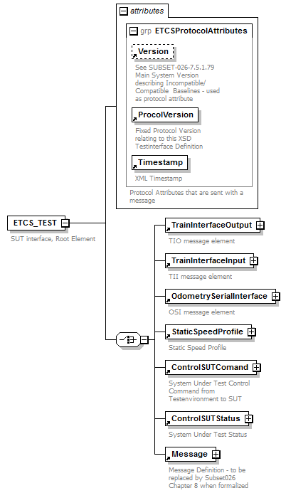

| diagram |  | ||||||||||||||||||||||||||||||
| properties |
|
||||||||||||||||||||||||||||||
| children | TrainInterfaceOutput TrainInterfaceInput OdometrySerialInterface StaticSpeedProfile ControlSUTComand ControlSUTStatus Message | ||||||||||||||||||||||||||||||
| attributes |
|
||||||||||||||||||||||||||||||
| annotation |
|
||||||||||||||||||||||||||||||
| source | <xs:element name="ETCS_TEST"> <xs:annotation> <xs:documentation>SUT interface, Root Element</xs:documentation> </xs:annotation> <xs:complexType> <xs:choice> <xs:element ref="TrainInterfaceOutput"/> <xs:element ref="TrainInterfaceInput"/> <xs:element ref="OdometrySerialInterface"/> <xs:element ref="StaticSpeedProfile"/> <xs:element ref="ControlSUTComand"/> <xs:element ref="ControlSUTStatus"/> <xs:element ref="Message"/> </xs:choice> <xs:attributeGroup ref="ETCSProtocolAttributes"/> </xs:complexType> </xs:element> |